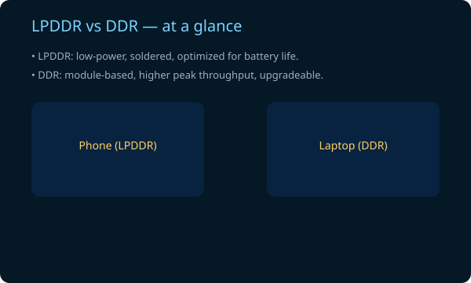

TL;DR — Quick summary
Short & practicalPhones use LPDDR memory (low-power), prioritize background app retention and fast app switching, and increasingly need RAM for on-device AI models and camera buffers. 16GB is about future-proofing, aggressive multitasking, and marketing — not because a single app needs all of it.
Multitasking
Keep many apps cached for instant switching
AI & models
On-device ML models need memory to stay loaded
Camera & buffers
High-res photo/video and HDR processing uses RAM
Phone vs Laptop RAM — Interactive comparison
Adjust workload to see how RAM is usedUse the buttons to simulate different workloads. The bars show estimated RAM used by system + apps. This models differences: mobile OS is optimized to keep apps cached; laptops handle larger OS and desktop apps.
How mobile RAM differs
LPDDR vs DDR — power & packaging
Mobile RAM (LPDDR4/LPDDR5) is soldered directly to the board, consumes less power, and often has higher per-die density. Laptops use DDR4/DDR5 modules offering higher peak bandwidth and upgradeability.
- Power efficiency: LPDDR optimized for battery life.
- Form factor: Soldered vs DIMM/SO-DIMM makes phones compact.
- Memory channels & bandwidth: differences affect workloads like gaming and desktop apps.
// simplified: phone RAM = low-power, high-density, soldered
// laptop RAM = module, upgradeable, higher peak bandwidthApp-switching simulator
Open multiple apps and see what happensEach app uses a simulated amount of memory. When phone RAM is full, the OS may trim background apps (free memory) or close them to recover memory.
Quick Quiz & Resources
Test knowledge + curated readingQ: Is 16GB phone RAM primarily for a single app to use fully?
Further reading
- LPDDR vs DDR explanations (see notes.svg).
- Android/multitasking articles and on-device AI coverage.
- Manufacturer guidance (Samsung, Pixel) about memory tradeoffs.